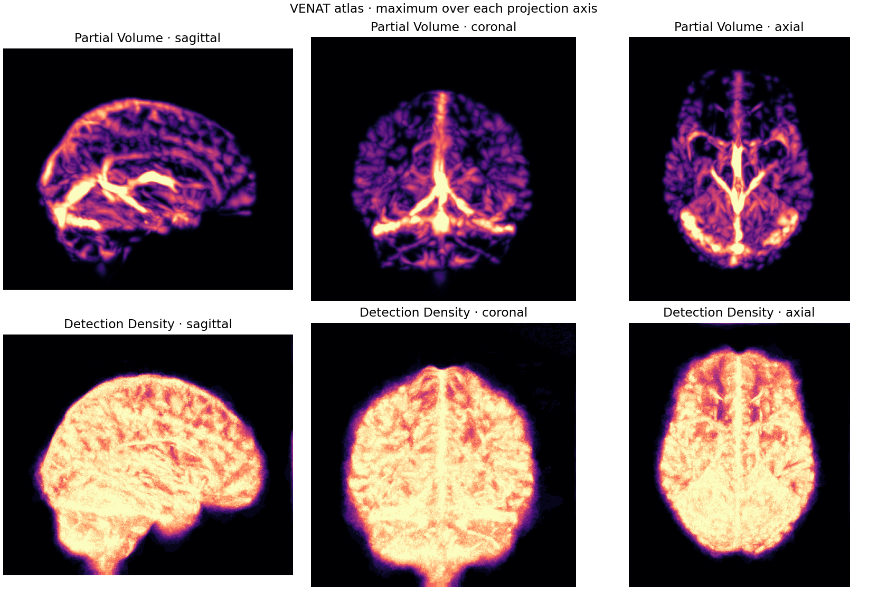

Return to Intracranial Haemorrhage
Venous Neuroanatomy Atlas
Explore three surfaces of the population partial-volume map. Lower thresholds include more of the map.
Verifying source surfaces…

VENAT combines measurements from multiple participants in MNI152 space. The threshold surfaces describe the atlas field. Individual vessels and thrombus require separate source annotations. Independent anatomical review is pending.
VENAT atlas by Janine Huck and colleagues, CC BY 4.0. Primer computed the projections and threshold surfaces.